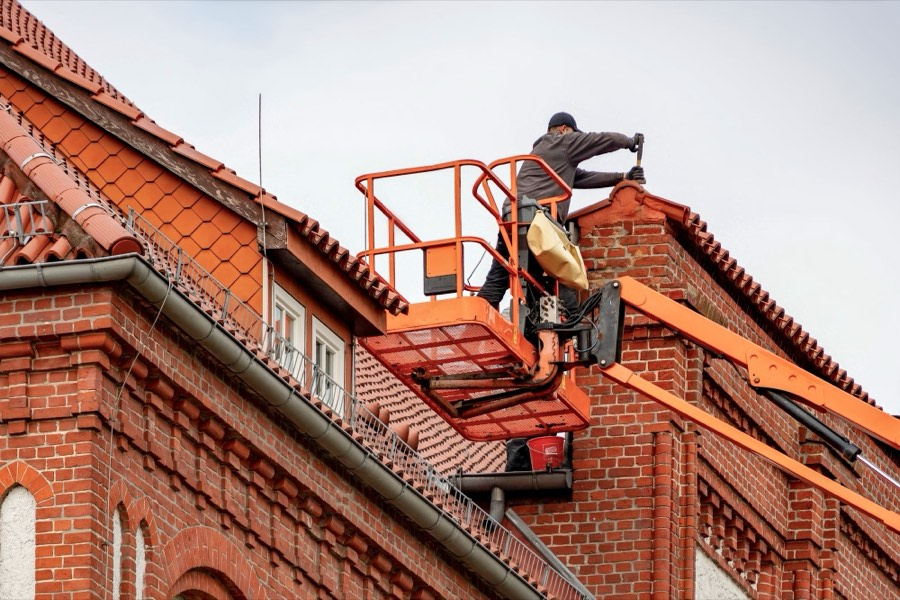

FirstendeAbschluss am Giebel, hier wird gearbeitet
OrtgangDie Ziegelreihe am Giebelrand
GratFormziegel, mit Klammern gesichert
SchneefangGitter über der Rinne
DachrinneSammelt das Wasser der ganzen Fläche
FallrohrHier verlässt das Wasser das Dach